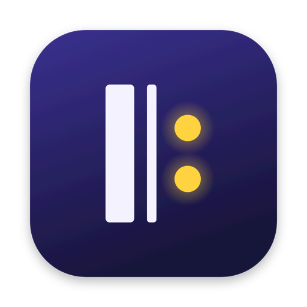
RepriseUn raccourci sauvegarde tes apps, tes onglets, tes dossiers et tes fichiers ouverts, avec une phrase : où j'en étais. Un clic remet tout en place.
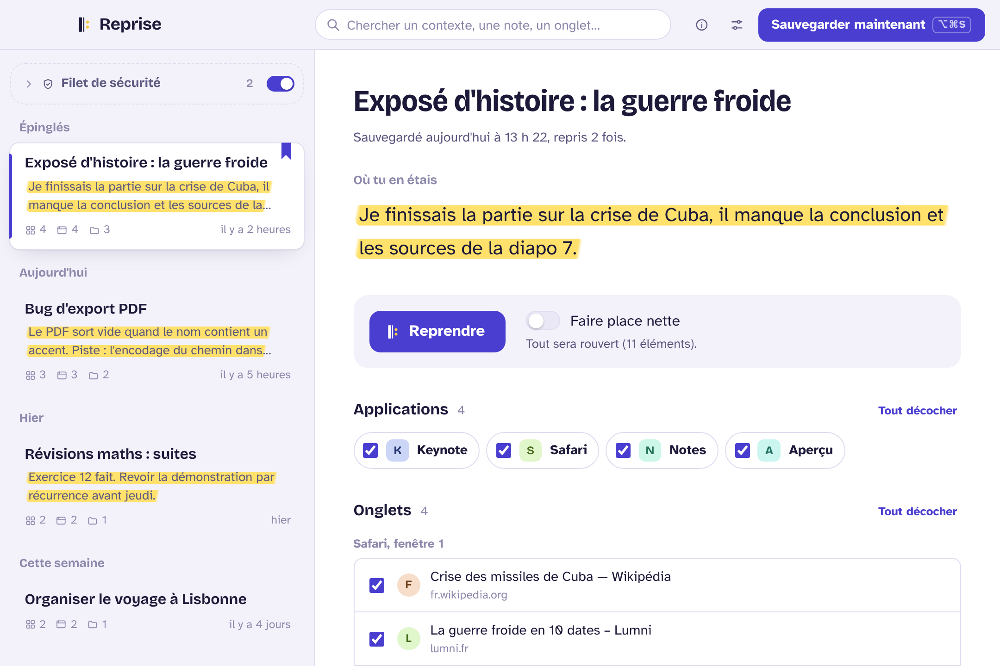
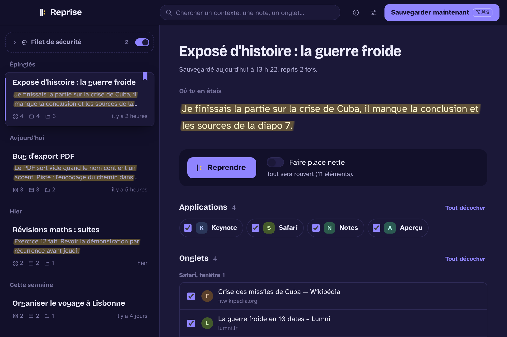
Comment ça marche
Depuis n'importe quelle app. Reprise photographie ce qui est ouvert : apps, onglets fenêtre par fenêtre, dossiers, fichiers.
Ce que tu faisais, la prochaine étape, ce qui bloquait. Entrée, c'est sauvegardé. Tu peux décocher ce qui n'a rien à voir.
Plus tard, tout se rouvre, chaque fenêtre à sa place, et ta phrase t'attend sur un post-it. ⌥⇧⌘R reprend le dernier contexte d'un coup.
Pour qui
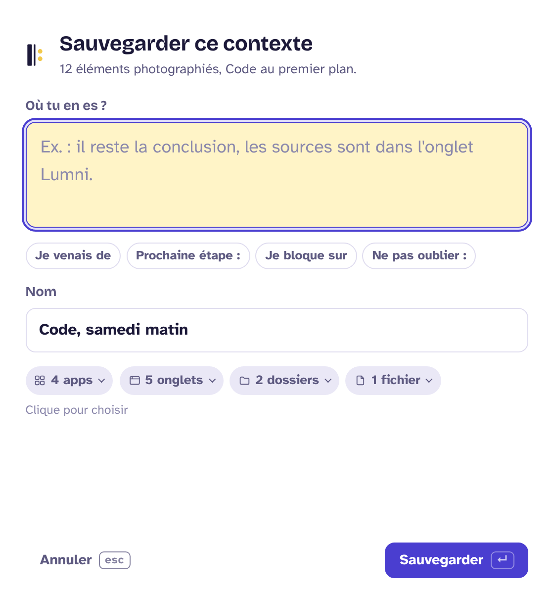
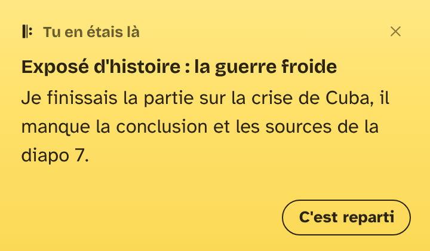
Filet de sécurité
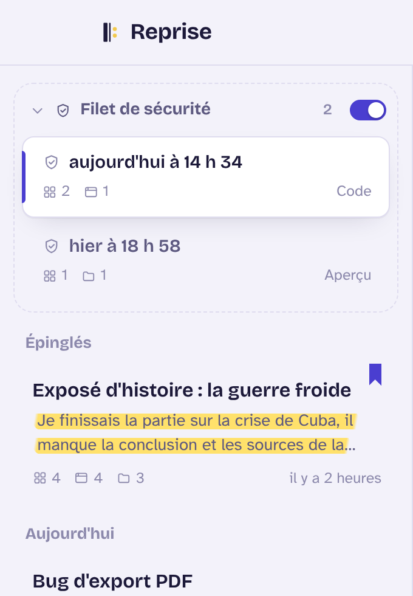
Habillages
Classique, Forêt ou Océan, en clair ou en sombre. Et deux fois par an, Reprise se déguise toute seule, puis revient comme avant. Ça se coupe d'un clic dans les réglages.
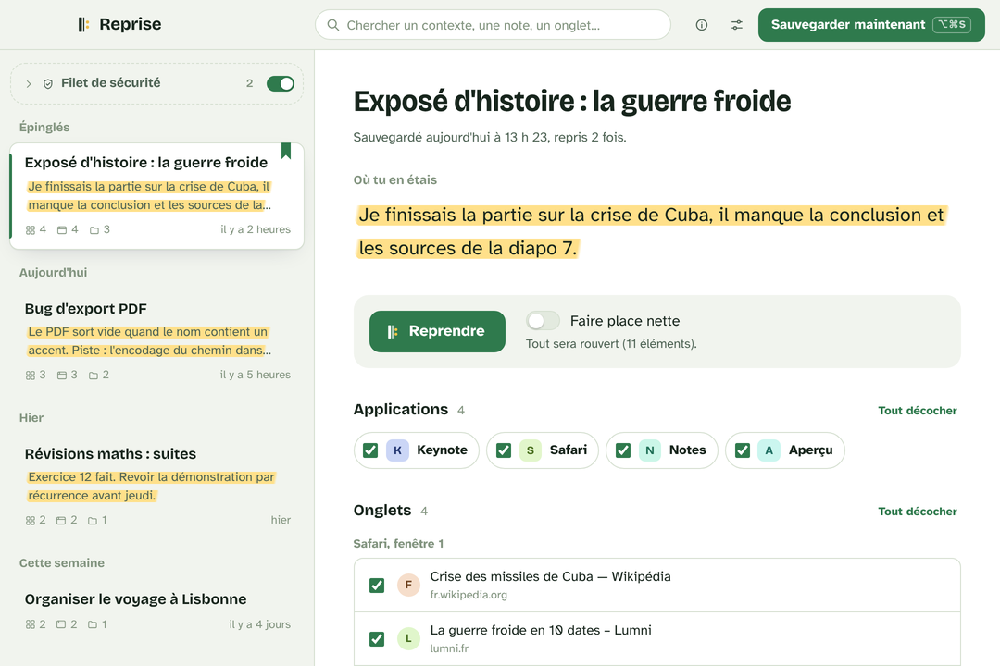
Des verts doux, comme un carnet de terrain.
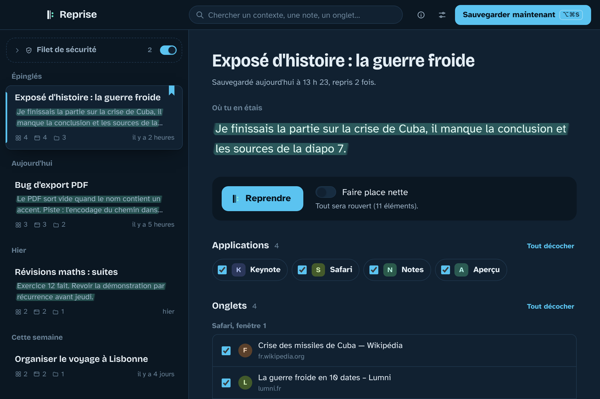
Bleu profond et surligneur menthe.
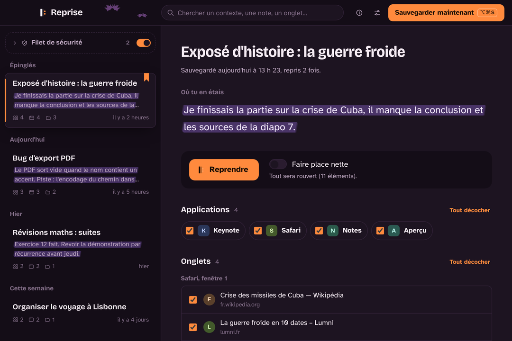
Orange et violet, des chauves-souris en haut, une citrouille sur le post-it.
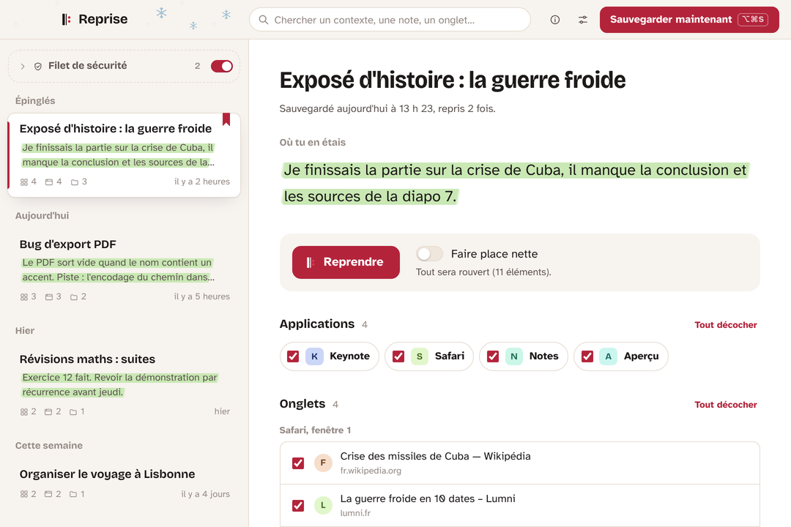
Rouge et vert sapin, un peu de neige qui tombe, du houx sur le post-it.
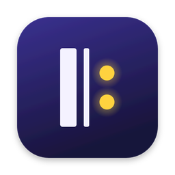
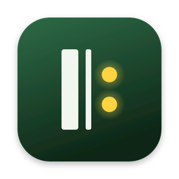
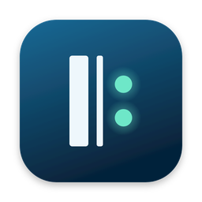
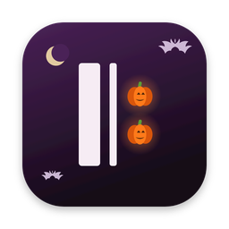
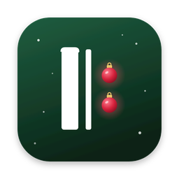
L'icône suit l'habillage, dans le Dock sur Mac et dans la barre des tâches sur Windows et Linux, tant que Reprise est ouverte. La neige s'arrête si tu as activé « Réduire les animations ».
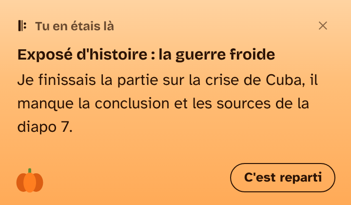
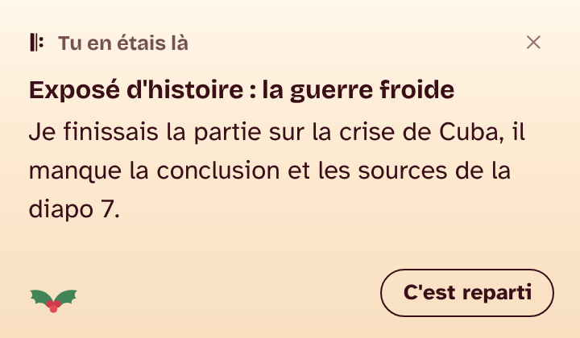
Navigateurs
Installer
Tout est sur la page de la dernière version.
.dmg et glisse Reprise dans Applications. La première fois seulement, ouvre le Terminal et colle xattr -cr /Applications/Reprise.app.-setup.exe. Si Windows affiche « Windows a protégé votre ordinateur », clique sur Informations complémentaires, puis Exécuter quand même..AppImage exécutable et lance-la, ou installe le .deb sur Debian, Ubuntu ou Mint.Une petite visite guidée t'explique tout. Ensuite, Reprise se met à jour toute seule : elle te prévient, tu cliques, elle redémarre à jour.